Cloud transcription
The convenient default
- BillingPer minute, every month
- Your audioUploaded to a vendor
- AccountRequired, with a login
- OfflineNever
- Long filesSize and minute limits
- AI agentsAn API key and a quota
- PriceA subscription
v0.1.7 MIT licensed · local-first
Paste a YouTube, Bilibili, Vimeo, TikTok, X, SoundCloud or Twitch link — or drop in a local file. Whisper transcribes it on your own machine, and a summary turns two hours into ten minutes. No account, no upload, no per-minute bill.
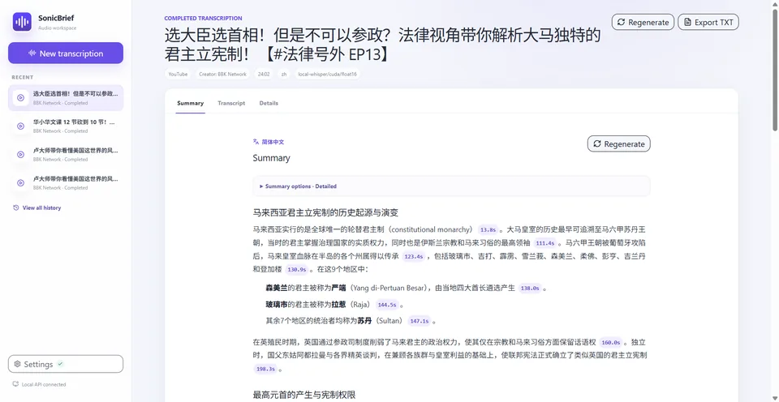
Works with
The app
No tabs, no tokens, no browser dance. Submit the link, watch the five steps, read the brief. These are real screenshots, not a mock-up.
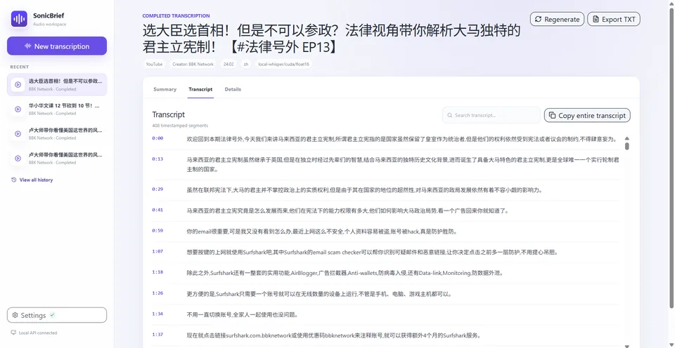
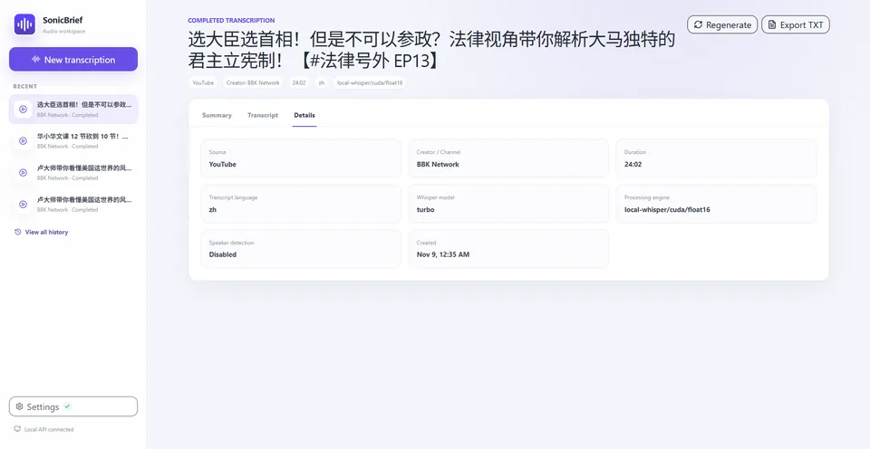
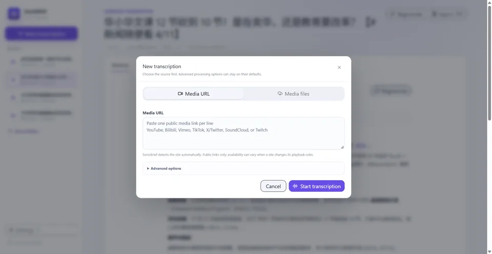
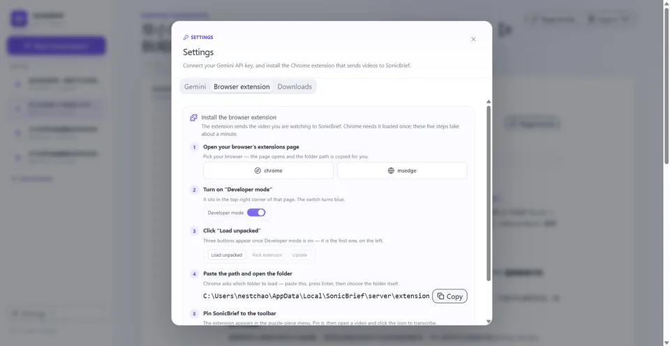
Every segment keeps its timecode. Search the transcript, copy the whole thing, or export SRT and WebVTT.
You can see exactly what ran: the model, the engine, and whether CUDA was used.
One field for the link, two clicks to start. The advanced options stay folded until you want them.
Load the extension once: five steps, and the folder path is copied for you.
Why local
Cloud transcription is fine until you need an hour of video every day, the audio is confidential, or the pricing changes. SonicBrief runs the model on your machine, so none of that reaches you.
The convenient default
Local-first by default
Local Whisper needs no key. Cloud fallback and built-in summaries are opt-in and use your own Gemini key — that is the only step where audio or a transcript leaves the machine, and it says so before it runs.
How it works
The same pipeline on the desktop and on the phone. Long recordings are split into twenty-minute ranges and merged back into one transcript.
The site is detected automatically and normalised, so a short link, a Share and a replayed live stream resolve to the same video.
yt-dlp grabs the audio-only stream and FFmpeg remuxes it. No video is stored unless you asked for it.
faster-whisper runs on your GPU when CUDA is there, on your CPU when it is not, and keeps the audio on the machine.
Six styles, your instructions, your key. Skip it and you still get a searchable transcript.
TXT, SRT, WebVTT and JSON, or leave it in the library and search it later.
What you get
The things that make a transcript useful at 2 a.m. — and the ones that stop a good tool from becoming a chore.
Every line carries a timecode, and a summary cites the moments it came from. Click a chip, land in the transcript.
Brief, Standard, Detailed, Study Notes, Key Points and Meeting notes — plus your own instructions.
A SQLite history with title and creator search, rename and delete. Nothing is uploaded; the file is yours.
CUDA float16 with automatic CPU fallback. Turbo, Large v3, Distil-Large v3 or Small — pick the trade-off.
TXT, SRT, WebVTT and JSON — for an editor, a subtitle track or a script.
The extension sends the video you are watching straight to the app. Alt+Shift+S from anywhere.
On Android, share a link or a file from any app. It lands on Home, ready to run.
A stdio bridge for Claude, Cursor or your own agent. It auto-starts the local backend, hands back a paginated transcript, and the agent summarises with its own model — no key required.
sonicbrief_mcp.py · stdio · local-whisper
When a site changes its rules, the bundled yt-dlp refreshes itself and the job retries — on the phone too.
The output
Real Markdown, rendered with real headings, lists and timestamp chips. Switch the style — the same transcript, read three ways.
Most of the software we use every day lives in the cloud, on somebody else’s computer.
Local-first flips that: your data lives on your device, and the network is an optimisation, not a requirement.
That has a cost. You have to think about sync, about conflicts, about what happens when two people edit the same row.
But the payoff is that the app keeps working on a plane, on a train, and ten years from now.
We kept a transcript of every meeting in a browser tab. It survived exactly one pricing change.
The fix was boring: move the model to the machine that already has the audio.
The talk defines local-first software as software where the primary copy of your data lives on your own device, and the network is only an optimisation.
Platforms
Windows, Android, the browser and your agent all speak to the same idea: submit media, get a transcript, keep the history.
A native shell with no Python, no Node and no setup script. WebView2 window, tray icon, and a bundled server that starts in seconds and stops when you quit.
NVIDIA cards can add the optional CUDA pack (1.2 GB) for GPU transcription; without it the GPU build runs on the CPU. Neither installer is code-signed, so SmartScreen may ask once.
No account, no desktop pairing, no Supabase. It transcribes and summarises on the phone with your own Gemini key, and long recordings are split into twenty-minute ranges and merged back.
Release builds are signed. Debug builds use a separate package name, so both can live on the same phone.
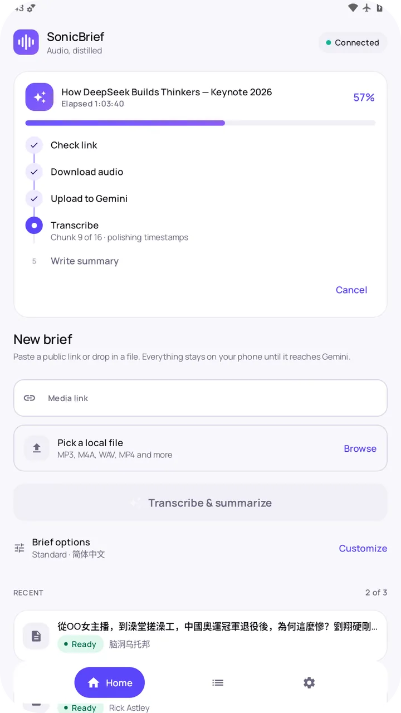
The popup reads the page, normalises the link and sends it to the app with one button. Right-click a video, or press Alt+Shift+S. If the app is closed, the extension starts it and hands the link over when it is ready.
chrome://extensions → Developer mode → Load unpacked → choose the extension folder.
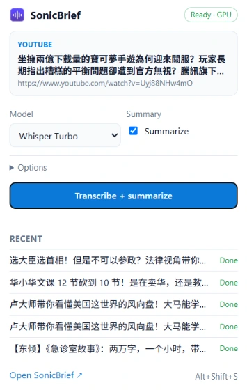
STT-first: the agent gets a transcript and summarises with its own model, so no Gemini key is involved. The bridge starts or reuses one local backend and shuts down the one it owns when the session ends.
submit_media_url · submit_local_file · get_job · get_transcript · export_transcript · generate_summary_with_gemini · cancel_job · delete_job
docker build -t sonicbrief-mcp:local .
docker run --rm -v sonicbrief-data:/data \
sonicbrief-mcp:local --self-testMIT for everything except the Android app, which is GPL-3.0-only because it links a GPL acquisition runtime. Python 3.11, Node 22 and FFmpeg on your PATH is all the workspace needs.
git clone https://github.com/nestchao/SonicBrief.git
cd SonicBrief
.\setup.bat
.\start.batOn the phone
A standalone APK: no account, no pairing, no desktop nearby. Share a link from YouTube, Bilibili or any app and it opens ready to run.
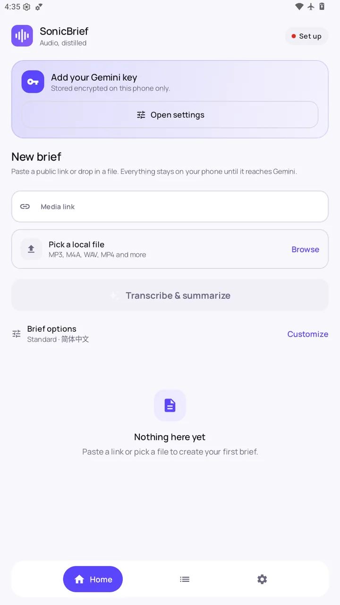
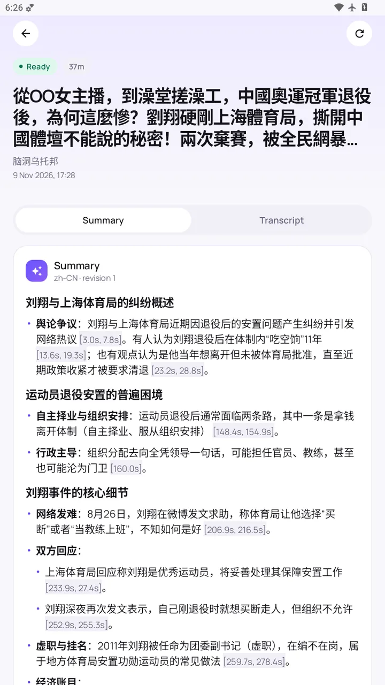
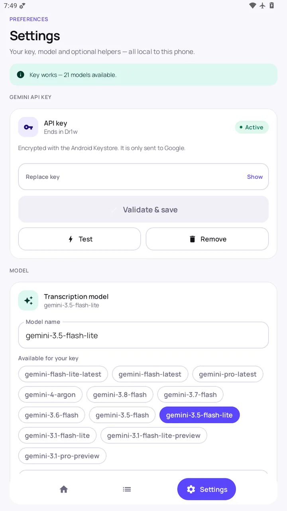
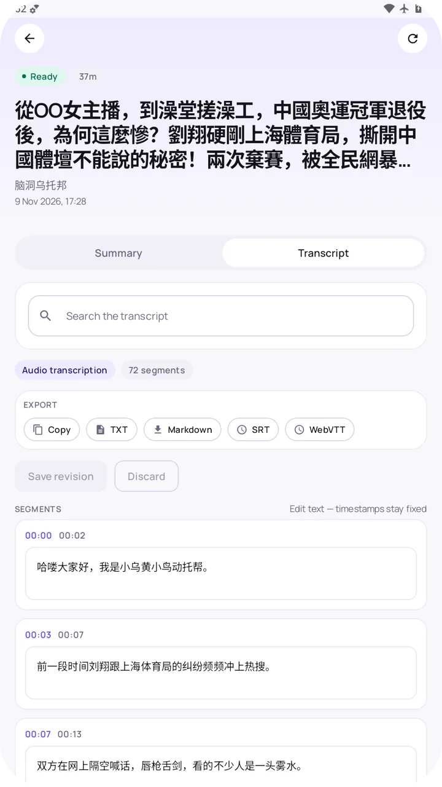
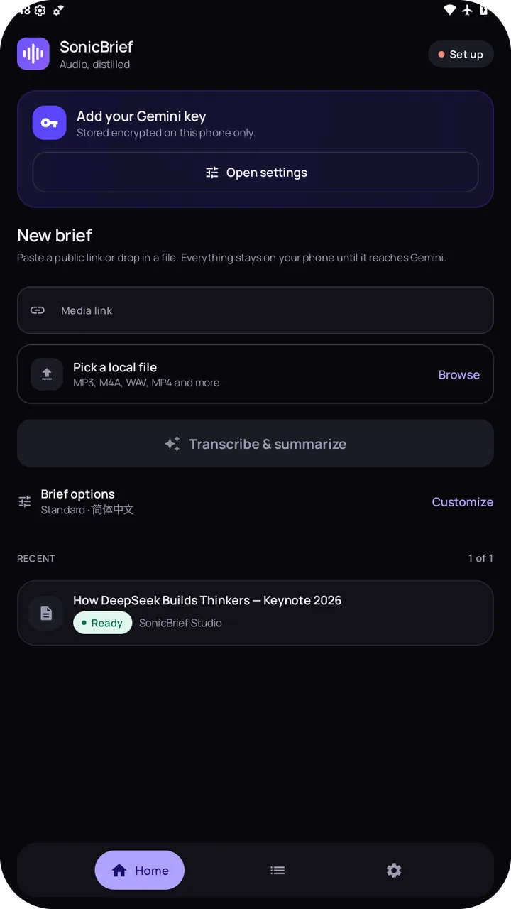
Privacy
There is no account, no telemetry and no server of ours. Here is exactly where the bytes go.
The API listens on 127.0.0.1:7860, so it is not reachable from another computer on your network.
Stored in backend/.env on Windows and encrypted with the Android Keystore on the phone. It is never returned to the interface.
Downloaded and uploaded audio is removed after processing. Only the transcript and the history row stay.
No analytics, no ads, no crash reporting. This page sets no cookies either — the theme and language live in localStorage.
The one honest exception: local Whisper keeps audio on the machine, but if you enable Gemini fallback or built-in summaries — or an agent summarises with a cloud model — that audio or transcript leaves for that step. The app shows which step is running, and you choose the key.
Quick start
Pick the shape you need. The installer needs nothing else; the source route needs Python 3.11, Node 22 and FFmpeg.
docker build -t sonicbrief-mcp:local .
docker run --rm -v sonicbrief-data:/data sonicbrief-mcp:local --self-test
# point your MCP host at:
# command: docker
# args: run --rm -i -v sonicbrief-data:/data sonicbrief-mcp:localgit clone https://github.com/nestchao/SonicBrief.git
cd SonicBrief
.\setup.bat # virtualenv, dependencies, backend\.env
.\start.bat # API :7860 + workspace :3000
# Android
cd android
.\gradlew assembleDebugFAQ
The ones that come up most often. Everything else is in the README.
No. CPU works out of the box, just slower. An RTX card with the optional CUDA pack is several times faster, and SonicBrief detects it automatically.
Only for cloud fallback, built-in summaries and the Android app. Local transcription never needs one — including over MCP, where the agent summarises with its own model.
Up to MAX_MEDIA_HOURS, twelve by default. The Android app splits long audio into twenty-minute ranges, transcribes them in order and merges the result.
YouTube changed something the bundled downloader did not understand. SonicBrief now refreshes yt-dlp and retries the job automatically; if it still fails it tells you to check the connection or import cookies.
Instagram, Facebook, Douyin and some YouTube videos need a signed-in session. Import a cookies.txt on Android, or start the app with SONICBRIEF_YTDLP_COOKIES_FROM_BROWSER set. Private, DRM-protected and paid content is out of scope.
In SQLite: data/sonicbrief.sqlite3 on Windows, and the app's private storage on Android. Nothing is uploaded to us — there is no us.
Yes, over stdio MCP. The bridge starts the local backend when needed, returns a paginated transcript, and the agent summarises with its own model. No Gemini key is involved.
Yes. The workspace and desktop app are MIT; android/ is GPL-3.0-only because it links a GPL acquisition runtime. You supply your own Gemini key if you want cloud summaries.
No account, no newsletter, no cookies. Just the repository.